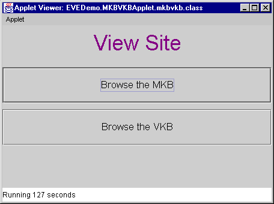

This tutorial will illustrate the functionality of Evolvable
View Environment by means of a walkthrough with 7 schema changes.
Each stage of handling the 7 schema changes is accompanied by a
screenshot.
This tutorial reflects the status of the EVE system as of
January 1999. We have since added support for a computation of
Quality and Cost of View Rewritings (QC-Model), which we have
demonstrated at SIGMOD '99.
| This applet is used to initiate schema changes at the
information sources. |
 |
| The second applet is used to browse the MKB (Meta
Knowledge Base) and VKB (View Knowledge Base) of the EVE
system. The MKB manages the meta knowledge (schema of
information sources and their relations to each other).
The VKB stores the view definitions currently maintained
in the data warehouse. |
 |
| Please wait for both applets to appear. The
"ISChange" applet may take longer than the
"MKBVKB" applet. |
| Click on "Browse the MKB" button to browse
the MKB. There are two major panels on this applet. The
left panel displays a hierarchical structure of the
information sources (ISs) and the right panel displays
their relations. There are six information sources in
this demo with each IS having one relation. On the right
side, the meta knowledge of a selected relation is
displayed. At the top, type constraints show all the
attributes and types of the selected relation. In the
center, join constraints show all the meaningful joins
between this relation and other relations. At the bottom,
we display partial-complete containment constraints (PC
constraints). These constraints show all the containment
relationships between this relation and other relations,
e.g., subset, superset or equivalent between extents. |
 |
We will now walk through seven test cases to trace
the effects of different schema changes. The information
space represents an US-wide travel agency with a branch
in Massachusetts. Case 1:
Adding an Attribute
Add-Attribute: IS2.MassBranch.Occupation
|
Back to TOC |
| The DBA of the Massachusetts branch of our travel
agency decides to add an attribute 'Occupation' to the
MassBranch relation by issuing the capability change add-attribute(IS2.MassBranch,Occupation)
with 'Occupation' being of type String. The
newly added attribute `Occupation' does not affect the
existing meta knowledge in the MKB, and does not affect
the current views. All the tuples in IS2.MassBranch have
null values for the Occupation attribute at this point,
until their values are explicitly set by the IS2
information provider.
|
 |
| This is the dialog box for adding one attribute
(obtained after clicking on the
"add-attribute"-button). You can use a drop
down list to select among the pre-defined types. Types
can be defined in our system for this purpose. |
 |
| This is the state of the MKB after the schema change.
The new attribute "OCCUPATION" appears in the
type constraints field. |
 |
Case 2: Deleting an attribute
which is dispensable in view definition
Delete-Attribute: IS2.MassBranch.Phone
|
Back to TOC |
| Looking at the view definition for
'PotentialCustomer' in the View Knowledge Browser Applet
reveals that, according to the view definition for
PotentialCustomer, our travel agent is willing to accept
query results with only the customers' names and
addresses, if the phone numbers are not available for
some reason. (The parameter AD - attribute dispensable
is set to true). |
 |
| If now the DBA of IS2 removes the Phone attribute
from the MassBranch relation by issuing delete-attribute(IS2.MassBranch.Phone),
our view can still be evolved. Since the Phone
attribute is dispensable and cannot be found in any other
information source, EVE simply drops it from the
PotentialCustomer view.
The other view (TravelInBoston) is not affected by the
schema change and therefore remains unchanged.
|
 |
| The attribute is going to be deleted, After clicking
on the "Delete Attribute" button and confirming
the dialog. The "Results of the View Evolution
Process" will be displayed after the evolution. In
this window, we can compare the two view definitions. We
can see that the new view definition omits the
"IS2.MASSBRANCH.PHONE" attribute from the
SELECT clause. |
 |
After clicking on the 'Display Extent Differences'
button, you can now compare the extent differences
between old and new view in a separate window.
The new extent does not have the
"MASSBRANCH_PHONE" attribute. |
 |
Case 3: Deleting an attribute
which is indispensible in view definition
Delete-Attribute: IS2.MassBranch.State
|
Back to TOC |
| Assume the DBA of IS2 decides to remove the State
attribute from the relation IS2.MassBranch (since IS2
lists only Massachussetts customers.) |
 |
| Since the attribute can not be dropped but can be
replaced from a different information source, EVE evolves
the view to incorporate the Customer table into the view
and uses its "State" attribute in the
PotentialCustomer view. A new join is added accordingly
(using the first join constraint listed above). This
screenshot shows the state of the MKB after dropping the
"STATE" attribute. |
 |
Since the attribute "STATE" cannot be
dropped from the view, the view has to include a similar
attribute from a different relation. In this case, we
replace the attribute by "CUSTOMER.STATE" from
Information Source 1 and add WHERE-clauses accordingly to
join the CUSTOMER table with the existing view. CREATE VIEW POTENTIALCUSTOMER (VE = SUPERSET) AS
SELECT IS2.MASSBRANCH.CNAME (AR = TRUE)
IS2.MASSBRANCH.STREET (AR = TRUE)
IS2.MASSBRANCH.CITY (AR = TRUE)
IS1.CUSTOMER.STATE (AR = TRUE)
FROM IS2.MASSBRANCH (RR = TRUE)
IS3.FLIGHTRE
IS1.CUSTOMER (RD = TRUE, RR = TRUE)
WHERE IS2.MASSBRANCH.CNAME
= IS3.FLIGHTRES.PNAME (CR = TRUE)
AND IS3.FLIGHTRES.DEST = 'Toronto' (CD = TRUE)
AND IS3.FLIGHTRES.DEPARTDATE <= 970101
AND IS2.MASSBRANCH.CNAME
= IS1.CUSTOMER.CNAME (CD = TRUE, CR = TRUE)
|
 |
| This shows the extent differences between the old and
new view definitions. The attribute "STATE" is
now being queried from a different information source,
but the extent remains the same since the new information
source provides the same information as the old
one. |
 |
Case 4: Renaming an attribute
Change-Attribute-Name: IS2.MassBranch.CName =>
IS2.MassBranch.Name
|
Back to TOC |
| We assume that the DBA of IS2 decides to change the
attribute CName of the MassBranch relation to Name by
issuing the following capability change: change-attribute-name(IS2.MassBranch,CName,Name).
In the demo, this is accomplished by clicking on the
"Rename Attribute" button. |
 |
| Type the new attribute name in the input box. |
 |
The evolved view is: CREATE VIEW POTENTIALCUSTOMER (VE = SUPERSET) AS
SELECT IS2.MASSBRANCH.NAME (AR = TRUE)
IS2.MASSBRANCH.STREET (AR = TRUE)
IS2.MASSBRANCH.CITY (AR = TRUE)
IS1.CUSTOMER.STATE (AR = TRUE)
FROM IS2.MASSBRANCH (RR = TRUE)
IS3.FLIGHTRES
IS1.CUSTOMER (RR = TRUE)
WHERE IS2.MASSBRANCH.NAME
= IS3.FLIGHTRES.PNAME (CR = TRUE)
AND IS3.FLIGHTRES.DEST = 'Toronto' (CD = TRUE)
AND IS3.FLIGHTRES.DEPARTDATE <= 970101
AND IS1.CUSTOMER.CNAME
= IS2.MASSBRANCH.NAME (CR = TRUE)
i.e., all occurrences of IS2.MassBranch.CName have
been renamed to "Name" in the view.
|
 |
| The extent did not change under this schema change. |
 |
Case 5: Adding a relation
Add-Relation: IS3.MileagePlus
|
Back to TOC |
| The DBA of IS3 decides to add a new relation
MileagePlus to its local schema by issuing a capability
change: add-relation(IS3,MileagePlus). |
 |
| The attribute is added by pressing the
"add-relation"-button and giving a name to the
relation. The schema of the new relation is fixed for
this demo and can be viewed in the drop-down list box in
the following dialog. This capability change does not
affect the existing meta knowledge in the MKB, nor the
view definition PotentialCustomer. (The MKB itself is
extended.) A join constraint between IS2.MassBranch and
IS3.MileagePlus may be added at a later time to make the
new table useful in our system. This is the MKB after we
add the MileagePlus relation.
|
 |
Case 6: Deleting a relation
Delete-Relation: IS5.HOTEL
|
Back to TOC |
| Assume that for some reason the Hotel relation
becomes unavailable (this is equivalent to a capability
change delete-relation(IS5.Hotel)). |
 |
| The evolved view has the HOTEL relation replaced by
the BBHOTEL relation. Note that BBHOTEL contains only the
hotel information in the Boston Back Bay area. The
new view definition is:
CREATE VIEW TRAVELINBOSTON (VE = SUBSET) AS
SELECT IS4.CARRENTAL.NAME
IS4.CARRENTAL.ADDRESS
IS4.CARRENTAL.PHONE
IS6.BBHOTEL.NAME (AR = TRUE)
IS6.BBHOTEL.ADDRESS (AR = TRUE)
IS6.BBHOTEL.PHONE (AR = TRUE)
FROM IS4.CARRENTAL
IS5.BBHOTEL (RR = TRUE)
WHERE IS4.CARRENTAL.CITY = 'Boston'
AND IS4.CARRENTAL.STATE = 'MA'
AND IS6.BBHOTEL.CITY = 'Boston' (CR = TRUE)
AND IS6.BBHOTEL.STATE = 'MA' (CR = TRUE)
The "HOTEL" relation changed to
"BBHOTEL" using a PC-constraint between
"HOTEL" and "BBHOTEL".
|
 |
| Two tuples from the view are missing (since Hotel2
does not exist in the BBHotel table). |
 |
Case 7: Change a relation
name
Change-Relation-Name: IS1,CUSTOMER,ALLCUSTOMER
|
Back to TOC |
| Assume the DBA of IS1 decides to change the name of
the relation CUSTOMER to ALLCUSTOMER by issuing a
capability change: change-relation-name(IS1,CUSTOMER,ALLCUSTOMER). |
 |
| Press the "Rename Relation" button and type
the new name. |
 |
The evolved view has CUSTOMER changed to ALLCUSTOMER
everywhere. The new view definition is: CREATE VIEW POTENTIALCUSTOMER (VE = SUPERSET) AS
SELECT IS2.MASSBRANCH.NAME (AR = TRUE)
IS2.MASSBRANCH.STREET (AR = TRUE)
IS2.MASSBRANCH.CITY (AR = TRUE)
IS1.ALLCUSTOMER.STATE (AR = TRUE)
FROM IS2.MASSBRANCH (RR = TRUE)
IS3.FLIGHTRES
IS1.ALLCUSTOMER (RR = TRUE)
WHERE IS2.MASSBRANCH.NAME
= IS3.FLIGHTRES.PNAME (CR = TRUE)
AND IS3.FLIGHTRES.DEST = 'Toronto' (CD = TRUE)
AND IS3.FLIGHTRES.DEPARTDATE <= 970101
AND IS1.ALLCUSTOMER.CNAME
= IS2.MASSBRANCH.NAME (CR = TRUE)
|
 |